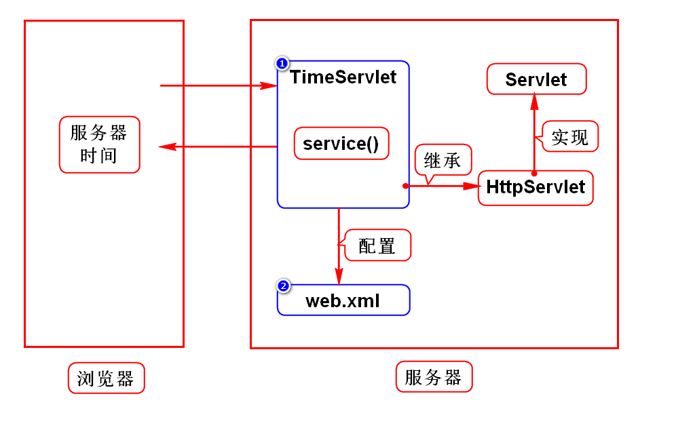

一.WEB项目的演变
1.演变的规律
由单机向网络发展
由CS向BS发展
2.CS和BS的区别
CS
Client Server
客户端需要单独开发单独安装
BS
Browser Server
由浏览器充当客户端,不需要单独开发及安装
二.服务器如何给浏览器返回一个网页?
1.静态网页
开发手册网页,百科,小说,新闻
无论谁看结果都一样
服务器直接保存一份HTML,并向浏览器发送此HTML
2.动态网页
淘宝,微博
每个人看的结果有差异
服务器保存一个对象,由它动态拼一个网页,发送给浏览器
在Java中该对象是Servlet
3.Servlet的特征
是满足规范(sun)的对象,也叫组件
存储在服务器上
可以动态的拼资源(HTML,IMG). 术语:处理HTTP协议
4.什么是Servlet?
是sun推出的用来在服务器端处理HTTP协议的组件
三.服务器
1.名词解释
Java服务器
WEB服务器
Java WEB服务器
Servlet容器
2.本质
是一个软件
可以运行Java项目的软件
3.举例
Tomcat(Apache)
JBoss
WebLogic
WebSphere
四.Tomcat使用方式
1.单独使用(软件上线时)
1)配置Java环境变量
学生机已经配置好了
2)下载及安装
去Apache官网
/doc.tedu.cn/tomcat
绿色版软件,解压缩即可用
3)启动Tomcat
Linux
打开/tomcat/bin,右键打开终端
加权限: 输入chmod +x *sh
启动: 输入./startup.sh
Windows
打开/tomcat/bin,双击startup.bat
4)访问Tomcat
打开浏览器
输入地址: http://localhost:8080
回车后看到一只猫则代表成功
5)关闭Tomcat
Linux
打开/tomcat/bin,右键打开终端
关闭: 输入./shutdown.sh
Windows
打开/tomcat/bin,双击shutdown.bat
2.通过Eclipse管理(开发时*)
1)如何在Eclipse中配置Tomcat
看/doc.tedu.cn/tomcat
2)重新配置Tomcat的前提
点window->preferences->server->runtime,remove tomcat
在Eclipse左侧选择Servers项目,右键将其删除
五.Servlet开发步骤(*)
1.创建WEB项目
WEB项目必须具备标准的目录结构
/WEB-INF/web.xml
2.导入jar包
1)maven搜索
搜javaee
2)依赖tomcat包
右键项目->properties->target runtimes->勾选tomcat->apply

3.开发Servlet
创建一个类,继承于HttpServlet,间接实现了Servlet接口
重写service(),在此方法内拼网页
4.配置Servlet
在web.xml中,通过2步配置好这个类
5.部署项目
打开Servers视图,选择Tomcat
右键点击Tomcat,选择Add and Remove
在弹出框内将要部署的项目从左侧移动到右侧
部署:拷贝的术语
6.访问Servlet
http://localhost:8080/servlet1/ts
7.重新部署项目
当修改项目代码后需要重新部署
打开Servers视图,右键点击tomcat,选择publish
建议先关闭tomcat,再重新部署,再重启tomcat
8.程序执行过程及错误解决方案
补充1:tomcat常见问题
1.问题的现象
有时启动tomcat时会报错,信息如下:
address already in use 8080
2.原因及解决办法
1)没有关闭tomcat
之前没有关闭tomcat,再次启动时产生了冲突
打开/tomcat/bin目录,输入命令./shutdown.sh
2)其他软件占用此端口
oracle会占用8080端口
修改tomcat端口:
打开Servers项目下面的server.xml,约65行,修改port="8080"
建议改为8088,8089
关闭tomcat再改端口,改完后要启动